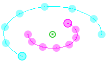
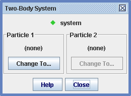
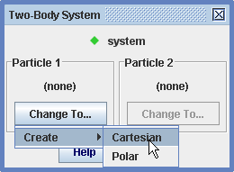
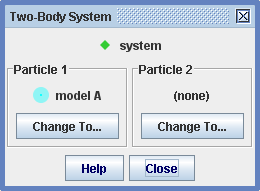
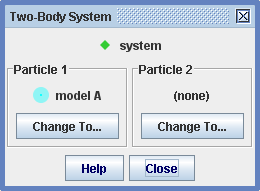
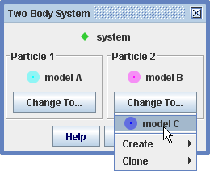

Sistem
dveh teles

Sled s Sistemom dveh teles modelira sistem z dvema dinamičnima delcema , ki medsebojno interaktirata preko notranjih radialnih in tangencialnih sil. Masa sistema je vsota mas delcev, položaj sistema je težišče oziroma center mas obeh delcev.
Notranje sile so funkcije razdalje r med delcema in kota theta od delca 1 do delca 2. Notranje sile delujejo na oba delca v sistemu, vendar v nasprotnih smereh (kot to zahteva tretji newtonov zakon). Notranje sile definiramo z Graditeljem modela, kot prikazuje slika 4.
Na vsakega od delcev v sistemu lahko delujejo tudi neodvisne zunanje sile. Zunanje sile prav tako definiramo z Graditeljem modela, kot to prikazuje slika 5.
Sistem z dvema telesoma generira podatke o gibanju in vektorje kot katerakoli druga masna točka. Več podrobnosti zasledimo v poglavju o masni točki.
1. Definiranje delcev v sistemu
Ko prvič tvorimo sistem dveh teles, se prikaže pogovorno okno, ki identificira delca v sistemu in z gumbi omogoča njuno spreminjanje. Pogovorno okno lahko kadarkoli prikličemo z izbiro Izberi delce... v menuju sledi sistema.

Slika. 1 Prazen sistem dveh teles
Nov sistem je v začetku prazen. Delec dodamo v sistem tako, da kliknemo na gumb in tvorimo nov model z delcem (lahko tudi izberemo prej narejen delec, kot to kaže slika 3).
 

Slika. 2 Dodajanje novega delca v sistem
To ponovimo tudi za dodajanje drugega delca. Nek delec sistema lahko tudi zamenjamo z drugim novim ali obstoječim delcem, kot kaže slika 3.

Slika. 3 Zamenjava delca v sistemu
2. Definiranje notranjih sil v sistemu
Notranje sile in druge lastnosti sistema dveh teles lahko prikazujemo in spreminjamo s pomočjo orodja Graditelj modelov. Podrobnosti o Graditelju modelov zasledimo v poglavju Tvorba modelovr.
Prikaz lastnosti modela dosežemo z izbiro sistema dveh teles v spustnem seznamu Graditelja modelov. Opazimo, da sta masi delcev sistema podani v seznamu parametrov, tako sta na voljo za uporabo v izrazih za silo. Masi in relativna položaja delcev ter njini hitrosti ne moremo spreminjati, saj jih določata delca kot taka.
3. Definiranje zunanjih sil na delce
Graditelj modelov prikazuje in omogoča spreminjanje tudi zunanjih sil in drugih lastnosti. Podrobnosti o Graditelju modelov zasledimo v poglavju tvorba modelov.
Za prikaz lastnosti delca izberemo opazovani delec v spustnem seznamu Graditelja modelov. Vse lastnosti, vključno z maso in začetnim položajem in hitrostjo lahko spreminjamo.